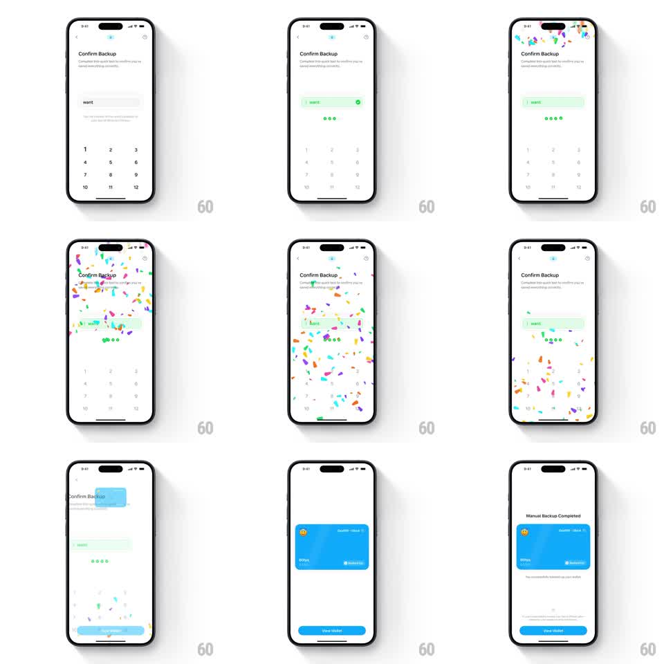

Media
Frame-by-frame

Rebuild this animation 1:1: Family's wallet backup confirmation - picking the correct recovery word highlights it green with a progress dot, then a full-screen confetti burst rains down as the screen transitions into a "Manual Backup Completed" card with the wallet preview.

Rebuild this animation 1:1: Family's wallet backup confirmation - picking the correct recovery word highlights it green with a progress dot, then a full-screen confetti burst rains down as the screen transitions into a "Manual Backup Completed" card with the wallet preview.
## Integration
Integration: stack-agnostic spec - springs given as stiffness/damping, timed motions as duration + curve; map every value to your framework and animation library of choice.
## Scene
"Confirm Backup" screen: prompt text, a rounded word chip ("want"), a grid of number buttons 1-12. After success: a blue rounded card with emoji, wallet name and "Backed up" check, plus a filled "View Wallet" button under a "Manual Backup Completed" title.
## Motion spec
Pattern: success celebration burst + content transition.
- Correct pick: chip flashes green with a check glyph (150ms), progress dots beneath advance (stagger 80ms).
- Confetti: burst from the top edge, ~60-80 paper pieces in varied colors, gravity-driven fall with per-piece rotation and horizontal drift, over ~2.5s; pieces fall past the bottom edge, no fade-out.
- Meanwhile the confirm UI crossfades/slides out and the completed state assembles: blue card scales 0.9 -> 1 with fade (spring ~280/24), title and CTA fade up 150ms later.
- Confetti continues falling over the new screen until it exits.
## Calibration
- Confetti is physical: varied sizes, tumbling rotation, slight lateral sway - not a uniform rain.
- The celebration overlaps the transition; never wait for confetti to finish before swapping content.
## Reduced motion
No confetti; green check, then a 200ms crossfade to the completed card.
## Don't miss
- Confetti spawns above the visible area and exits below - full traversal.
- The completed card is a shared element with the wallet it backed up (same blue, same emoji tile).